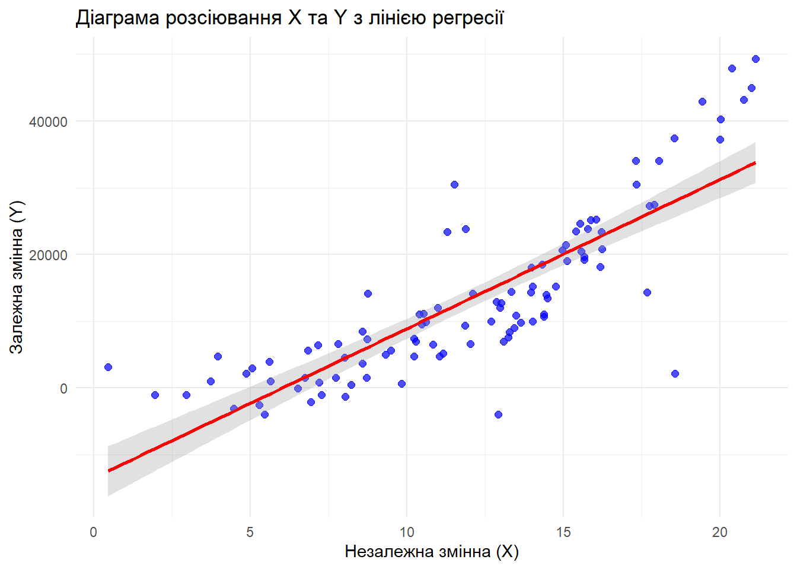

Лабораторна робота № 5. Випадок з двома вибірками. Побудова регресійних моделей
Author
Конько Ярослав, КН-24-1
Мета: Засвоєння базових принципів, знайомство з інструментами та набуття навичок роботи з декількама вибірками, побудови моделей регресії на основі МНК засобами мови програмування R та колекції пакетів dplyr, ggplot2.
Постановка завдання
Побудувати модель парної регресії на основі даних з файлу.
Завантаження та підготовка даних
Підготовка середовища
Code
if (!require(readxl)) install.packages("readxl")
Loading required package: readxl
Code
if (!require(dplyr)) install.packages("dplyr")
Loading required package: dplyr
Attaching package: 'dplyr'
The following objects are masked from 'package:stats':
filter, lag
The following objects are masked from 'package:base':
intersect, setdiff, setequal, union
Code
if (!require(ggplot2)) install.packages("ggplot2")
Loading required package: ggplot2
Code
if (!require(car)) install.packages("car")
Loading required package: car
Loading required package: carData
Attaching package: 'car'
The following object is masked from 'package:dplyr':
recode
x_col <-1# Номер стовпця для Xy_col <-2# Номер стовпця для Yreg_data <-data.frame(X = data[[x_col]],Y = data[[y_col]])# Видалення рядків з пропущеними значеннямиreg_data <- reg_data[complete.cases(reg_data), ]cat("Розмірність даних для регресії:", dim(reg_data), "\n")
Розмірність даних для регресії: 100 2
Code
cat("Перші 6 спостережень:\n")
Перші 6 спостережень:
Code
head(reg_data)
X Y
1 16.23 20778.496
2 13.49 10905.398
3 15.08 21479.462
4 4.47 -3098.784
5 13.98 18087.405
6 12.87 12884.345
# Діаграма розсіювання з лінією трендуp1 <-ggplot(reg_data, aes(x = X, y = Y)) +geom_point(alpha =0.7, size =2, color ="blue") +geom_smooth(method ="lm", se =TRUE, color ="red", alpha =0.3) +labs(title ="Діаграма розсіювання X та Y з лінією регресії",x ="Незалежна змінна (X)",y ="Залежна змінна (Y)") +theme_minimal()print(p1)
`geom_smooth()` using formula = 'y ~ x'

Code
# Histograms for both variablesp2 <-ggplot(reg_data, aes(x = X)) +geom_histogram(aes(y = ..density..), bins =15, fill ="lightblue", alpha =0.7) +geom_density(color ="darkblue") +labs(title ="Гістограма розподілу X",x ="X", y ="Щільність") +theme_minimal()p3 <-ggplot(reg_data, aes(x = Y)) +geom_histogram(aes(y = ..density..), bins =15, fill ="lightgreen", alpha =0.7) +geom_density(color ="darkgreen") +labs(title ="Гістограма розподілу Y",x ="Y", y ="Щільність") +theme_minimal()ggarrange(p2, p3, ncol =2)
Warning: The dot-dot notation (`..density..`) was deprecated in ggplot2 3.4.0.
ℹ Please use `after_stat(density)` instead.
Побудова регресійної моделі
Code
# Побудова лінійної регресійної моделіmodel <-lm(Y ~ X, data = reg_data)# Вивід результатів моделіcat("Результати регресійного аналізу:\n")
Результати регресійного аналізу:
Code
print(summary(model))
Call:
lm(formula = Y ~ X, data = reg_data)
Residuals:
Min 1Q Median 3Q Max
-25859.0 -4239.8 -660.2 3447.3 18194.8
Coefficients:
Estimate Std. Error t value Pr(>|t|)
(Intercept) -13469 1948 -6.913 4.85e-10 ***
X 2235 151 14.804 < 2e-16 ***
---
Signif. codes: 0 '***' 0.001 '**' 0.01 '*' 0.05 '.' 0.1 ' ' 1
Residual standard error: 7026 on 98 degrees of freedom
Multiple R-squared: 0.691, Adjusted R-squared: 0.6878
F-statistic: 219.1 on 1 and 98 DF, p-value: < 2.2e-16
Code
# Детальна інформація про модельmodel_summary <-summary(model)cat("Рівняння регресії:\n")